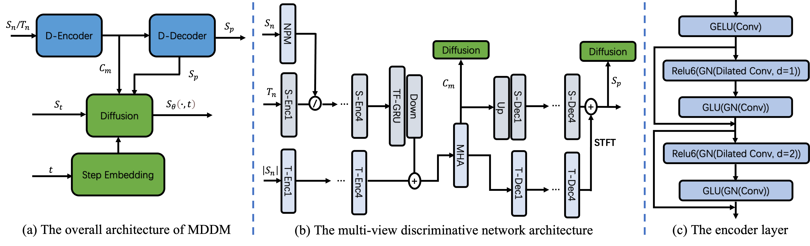

MDDM: A Multi-view Discriminative Enhanced Diffusion-based Model for Speech Enhancement
Anonymous author*
Alibaba Digital Media Entertainment Group, Beijing, China
*Corresponding author
Abstract
With the development of deep learning, speech enhancement has been greatly optimized in terms of speech quality. Previous methods typically focus on the discriminative supervised learning or generative modeling, which tends to introduce speech distortions or high computational cost. In this paper, we propose MDDM, a Multi-view Discriminative enhanced Diffusion-based Model. Specifically, we take the features of three domains (time, frequency and noise) as inputs of a discriminative prediction network, generating the preliminary spectrogram. Then, the discriminative output can be converted to clean speech by several inference sampling steps. Due to the intersection of the distributions between discriminative output and clean target, the smaller sampling steps can achieve the competitive performance compared to other diffusion-based methods. Experiments conducted on a public dataset and a real-world dataset validate the effectiveness of MDDM, either on subjective or objective metric. The paper is available in our Paper.

Figure 1: The overall architecture of MDDM, multi-view discriminative network and encoder layer. In subfigure (a), $ S_n $ and $ T_n $ are noisy signals in frequency and time domains, respectively. Two D-* are encoder and decoder of discriminative network and output spectrogram is $ S_p $. $ S_t $ is the sampled spectrogram at time-step $ t $. The intermediate multi-view feature $ C_m $ and output $ S_p $ are the conditions of diffusion model. In subfigure (b), S-* and T-* means frequency and time domains, respectively. NPM is the noise perception module and $ \oslash $ means the modulation mode. Note that the skip connections are not drawn. In subfigure (c), the encoder module is shown. GELU is Gaussian Error Linear Unit and GN denotes GroupNorm. The dilation rates are 1 and 2, respectively.
Demos
Real-world Samples:
| Mixture | MDDM | StoRM | SGMSE+ | MDM | HDemucs | BSRNN |